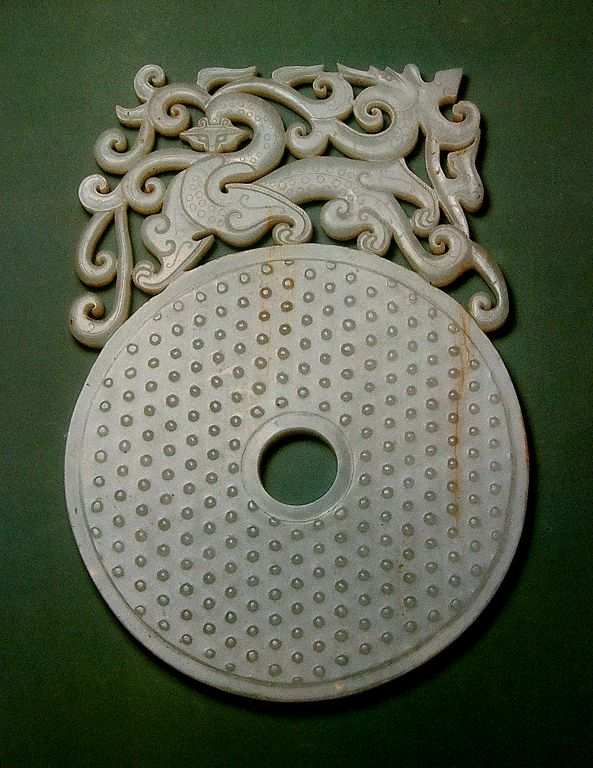
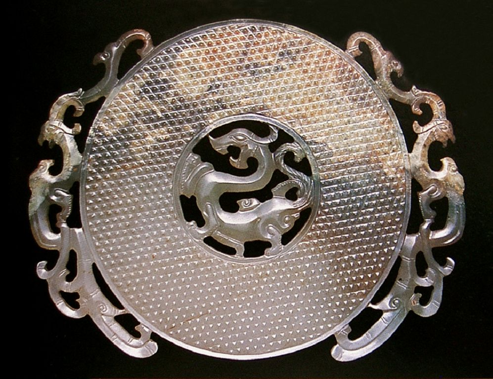

中国玉文化是一首凝固的史诗，有着浓浓的历史沉淀感，每一段历史，玉器都有它特殊的精神气质；每一段历史，玉器都有它特有的形式美感。 4.秦汉时期玉器工艺——厚葬用玉 洗练雄浑 秦灭六国，统一中华，建立了空前强大的中央集权的封建帝国。汉代 国家统一，经济的发展和文化的昌盛使玉器工艺进入承前启后的黄金时代。 ① 厚葬用玉 汉代玉器中的“礼玉” 渐渐衰退，而葬玉之风盛行，玉衣、玉塞、玉含、玉握、玉辟邪等“葬玉”臻于完备。 ② 雄浑霸气 汉代除了厚葬用玉以外，装饰玉有相当的比重，玉器品种规模扩大，战国玉器S曲线形构图在汉代玉器中得到进一步的升华。汉代玉器造型构图严谨，气韵生动，雄浑霸气，洗练豪放，显示出汉代特有的琢玉风格。 ③ 工艺技巧 汉代玉器工艺技巧在继承前代的基础上继续发展，浮雕、圆雕、镂雕技术普遍应用，被称为“汉八刀”的雕琢手法，豪放有力，仅寥寥数刀，就神气完足。 东汉 蟠螭环
东汉 蟠龙环
东汉 神兽纹玉樽
东汉 玉双螭龙纹 形佩
枫叶底纹 汉龙副本
汉 青玉蝉
汉代 白玉蝉
汉代 白玉鸠
汉代 单凤鸡心佩
汉代 镂雕双龙璜
汉代 青白玉大耳立兔
汉代 乳丁壁
汉代 心形佩
汉代 心形佩1
汉代 羽人御辟邪
汉代 玉蝉
汉代 玉琥
汉代 玉鸡
汉代 玉龙纹佩
汉代 玉辟邪兽
汉代 玉舞人（一组）
汉代 玉猪
汉代 子辰玉佩
汉龙
灰地
祭祀玉人与舞人
龙凤镂空璧
 南北朝 青玉辟邪 南北朝 青玉辟邪秦 飞龙翼虎玉嵌版
秦 玉嵌版七件
秦 玉嵌版七件1
秦杯
秦杯1
秦杯2
秦杯3
秦杯背
秦汉避邪
秦玉1
 西汉早期 舞人玉佩 西汉早期 舞人玉佩玉猪
图片
西汉 螭纹心形佩
西汉 螭纹玉叶
西汉 龙凤同獾（欢）玉佩
西汉 龙凤心形佩
西汉 龙凤玉叶
西汉 镂空双龙双凤璜
西汉 拼嵌玉辟邪
西汉 青玉螭纹出廓剑 sddd
西汉 玉guan
西汉 玉剑饰
西汉 玉龙凤纹出廓瑗
 西汉 玉舞人 西汉 玉舞人西汉前期 玉连体双龙佩
西汉前期 玉连体双龙佩1
西汉前期 玉龙凤饰壁
西汉前期 玉游龙卧蚕纹壁
 西汉早期 白玉九魑龙璧 西汉早期 白玉九魑龙璧 |
| 珠宝设计网站 中国珠宝设计网 国际珠宝网 傲宝网 BACCARAT |
雕塑设计网站 中国雕塑网 |
玉器图库 一些挂件 一些手把件 一些摆件 |
玉器设计与雕刻大赛 上海玉器雕刻神功奖 上海玉器雕刻玉龙奖 北京玉器雕刻天工奖 |
玉器设计与工艺发展动态 玉器设计与工艺过去 玉器设计与工艺现在 玉器设计与工艺未来 |